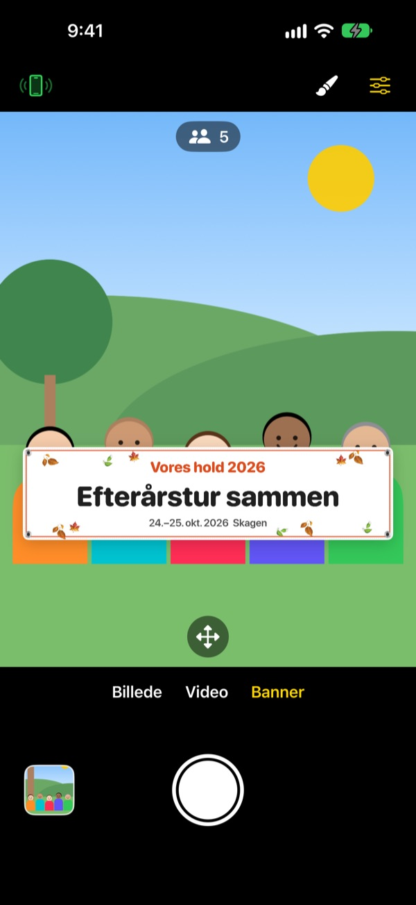
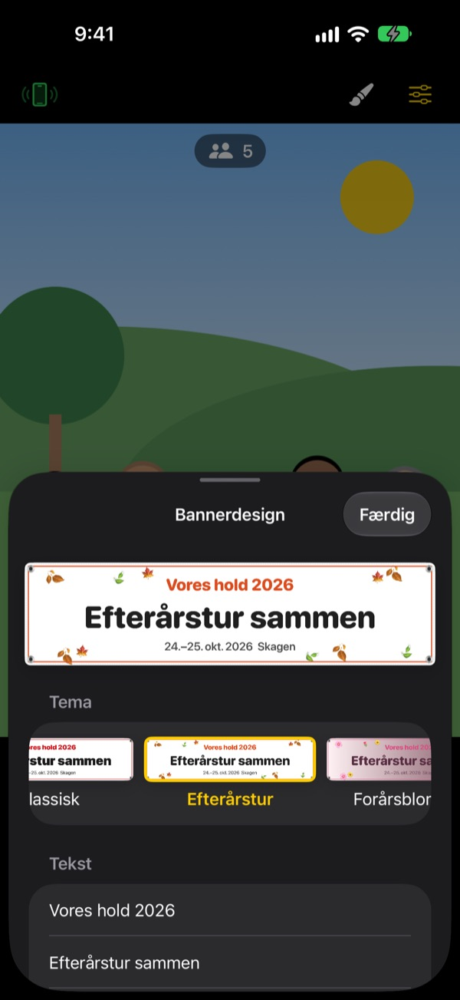

Gruppebilledet med banner.
Uden at trykke et banner.
Skriv teksten, vælg et tema, og banneret står lige foran gruppen. En vens iPhone bliver fjernbetjening med én QR-scanning, så den, der tager billedet, også kommer med.
Alle funktioner er gratis. Kræver iOS 17 eller nyere.

Lav et banner
Ret teksten, og tryk på et tema. Tryk på udløseren, så tæller den ned fra 3, ligesom i appen.
Bestiller du et banner til ét billede?
Du bestiller det, slæber det med på udflugten, og bagefter ved ingen, hvor det skal være. Og fordi der ikke er nogen tilbage til at tage billedet, mangler der altid én. ShutterLink sætter banneret ind i kamerabilledet og gør en vens iPhone til fjernbetjening, så alle kommer med på billedet med banneret.
Det rigtige banner på et minut
Vælg mellem 13 temaer som efterårstur, forårsblomster, nytårsfest, fødselsdag, idrætsdag, eksamensfest, bryllup og firmaworkshop, og skriv op til tre linjer med din egen tekst.
Skift baggrund, skrifttype, pynt, farver og format, og tilføj dit logo. Vælg stof, vinyl eller papir: Et stofbanner hænger, krøller og blafrer i vinden som et rigtigt.

Fjernbetjening uden installation
Tryk på fjernbetjeningsknappen øverst til venstre, og en QR-kode dukker op. Din ven scanner den med Kamera-appen, og ShutterLink Remote åbner straks som App Clip og forbinder.
I live-visningen på fjernbetjeningen kan du endda se banneret, så du bare sætter billedet op og trykker. Hvert billede lander straks på iPhonen med fjernbetjeningen, så en ven uden appen kan gemme og dele det på stedet.
Tre trin, så er du i gang
- 1
Stil iPhonen op
Åbn ShutterLink, og stil iPhonen på et stativ eller en hylde.
- 2
Placer banneret
Vælg Banner nederst, indstil tekst og tema med penslen, og tryk på gulvet, hvor gruppen skal stå.
- 3
Løft hånden
Løft håndfladen, eller tryk på udløseren på fjernbetjeningen. Selvudløseren tæller ned og tager billedet.
Lavet til gruppebilleder
- Håndfladebevægelse · klapudløser
- Løft en åben hånd mod kameraet, eller klap én gang højt for at starte selvudløseren
- Smileudløser
- Tager selv billedet, når alle smiler med åbne øjne
- Selvudløser 3 · 5 · 10 · 20 · 30 s
- En stemme tæller ned, blitzen blinker med, og fjernbetjeningen vibrerer i hånden
- Bed alle om at kigge på kameraet
- Tryk, og kamera-iPhonen kalder højt på alle, så de kigger i linsen
- Serie på 3 · 5 billeder
- Vælger det bedste billede, hvor alle har åbne øjne. Du kan skifte til et andet i galleriet
- Antal personer · kanter · vaterpas
- Tæller personerne i billedet, advarer når nogen står i kanten, og viser et vaterpas når telefonen hælder
- Interval fra 3 s til 1 min
- Fang en solnedgang eller et projekt undervejs med faste mellemrum
- Kamerastyring
- Fokus og eksponering med et tryk, eksponeringskorrektion, blitz, gitter, zoom fra 0,5x op til 10x afhængigt af modellen, front- og bagkamera, video
- Enkel tilstand
- Fjernbetjeningen viser kun én stor udløserknap, som alle kan finde ud af
- Lydstyrkeknapper · Kamerastyring
- Tag billedet direkte på kamera-iPhonen, uden fjernbetjening
I bannertilstand kan du ikke bruge blitz, serieoptagelse, zoom eller frontkameraet. Selvudløser, håndfladeudløser og fjernbetjening virker som normalt.
Alle funktioner er gratis
Gratis
- Bannertilstand med 13 temaer
- Fjernbetjening uden installation (App Clip)
- Udløser med håndflade, klap og smil, plus selvudløser
- Bedste billede, personoptælling og vaterpas
- Video og intervaloptagelse
Giv drikkepenge (valgfrit)
- Send små, mellemstore eller store drikkepenge fra Indstillinger
- Drikkepenge låser intet op og spærrer intet
Ikke et abonnement. Du betaler én gang, kun når du giver drikkepenge.
Ingen reklamer og ingen konto.
Ofte stillede spørgsmål
Hvad skal jeg bruge?
Installer ShutterLink på den iPhone, der tager billedet (iOS 17 eller nyere). På iPhonen med fjernbetjeningen skal intet installeres, den skal kun have internet første gang App Clip'et åbner. Hold Bluetooth slået til på begge, og hold dem tæt på hinanden, typisk inden for 10 m.
Jeg scanner QR-koden, men App Clip'et åbner ikke.
Tjek, at iPhonen med fjernbetjeningen er på internettet. Du kan også skrive kamera-iPhonens firecifrede kode i ShutterLink Remote og trykke på Opret forbindelse. Tjek også, at App Clips ikke er blokeret i Indstillinger › Skærmtid › Indholds- og anonymitetsbegrænsninger.
Den hænger ved "Søger efter kamera …".
ShutterLink skal være åben på skærmen på kamera-iPhonen. Tjek, at Bluetooth er slået til i Indstillinger › Bluetooth på begge telefoner. Koden skifter, hver gang appen åbnes, så har du åbnet den igen, skal du bruge den nye QR-kode eller kode og trykke på Prøv igen.
Jeg ser "Bluetooth-adgang afvist".
Slå ShutterLink til i Indstillinger › Anonymitet og sikkerhed › Bluetooth. Fjernbetjeningen er et App Clip og står måske ikke på listen. Scan i så fald QR-koden igen, og tryk på Tillad, når du bliver spurgt.
Live-visningen hakker eller er sløret.
Live-visningen er med vilje gjort lille, så den kan sendes over Bluetooth. Billeder og videoer gemmes i kamera-iPhonens fulde kvalitet. Vægge, mennesker eller afstand kan give hak, men udløseren og de andre funktioner virker stadig.
Hvor havner mine billeder?
I Fotos på kamera-iPhonen og i appens galleri. Fjernbetjeningen får også en kopi, men gemmer den ikke selv, så gem eller del den, før du lukker fjernbetjeningen. Kommer der intet i Fotos, så giv ShutterLink adgang i Indstillinger › Anonymitet og sikkerhed › Fotos.
Mine videoer har ingen lyd.
Slå ShutterLink til i Indstillinger › Anonymitet og sikkerhed › Mikrofon.
Kan jeg forbinde flere fjernbetjeninger?
Ja. Flere iPhones kan forbinde på samme tid med samme QR-kode eller kode, og alle udløser det samme kamera.
Forbindelsen ryger, mens jeg fotograferer.
ShutterLink holder skærmen tændt, så længe appen er åben. Låser du telefonen med sideknappen eller skifter app, ryger forbindelsen, så hold appen på skærmen, mens du fotograferer.
Bliver mine billeder uploadet nogen steder?
Nej. De to iPhones forbinder direkte via Bluetooth, og billeder og videoer bliver kun på kamera-iPhonen og den forbundne fjernbetjening. Det virker også i bjergene eller på stranden uden dækning, og der skal ingen konto til.
Er det stadig ikke løst, eller har du fundet en fejl? Skriv til leeo@kakao.com. Nævn model og iOS-version for begge iPhones, så kan vi hurtigere se på det.